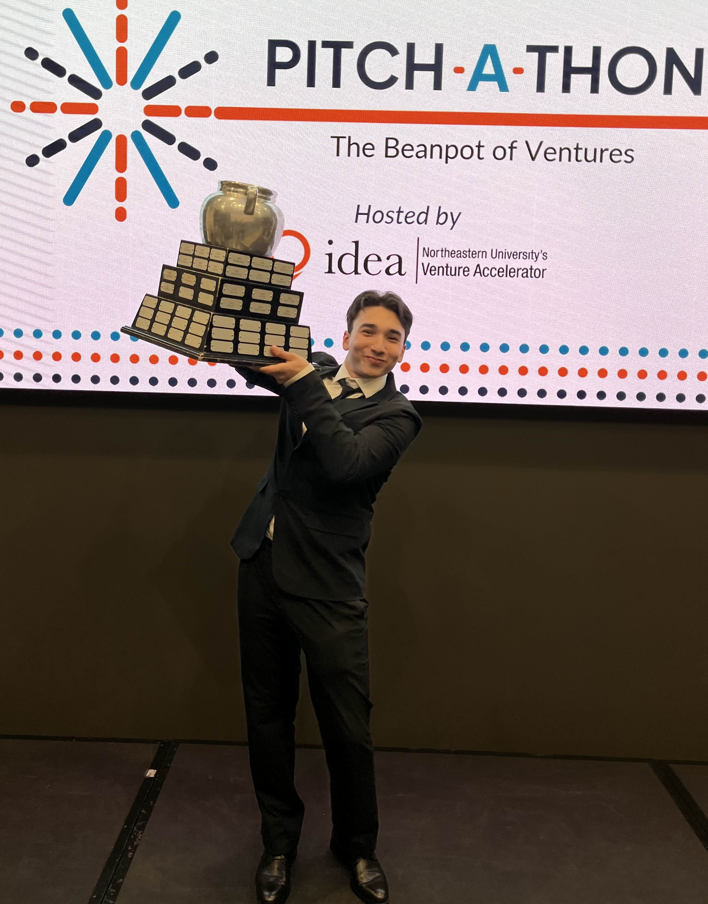

Professional Experience
My journey through internships, research positions and venture accelerators
Cloud Infrastructure Intern
Amazon
Boston, MA
September 2023 - December 2023
Spearheaded AWS operations and connectivity for a system managing thousands of database points, optimizing data flow and improving latency by 15% within connections across distributed environments.
Collaborated on the design and optimization of database architecture, enabling faster query execution and supporting the development of secure, scalable API endpoints to facilitate seamless data access
Integrated vector databases, AWS Amplify, and AWS Direct Connect to enable real-time data synchronization, reduce data retrieval times by 10%, and enhance cross-platform connectivity for cloud-native applications.
Key Achievements
- Improved implementation of automated monitoring system
- Developed hands-on expertise in Kubernetes by assisting with container orchestration tasks, streamlining deployment pipelines, and automating infrastructure provisioning
Technologies Used
Software Engineering Mentee
Dell Technologies
Hopkinton, MA
January 2024 - April 2024
Optimized cloud infrastructure by leveraging Dell Technologies APEX Private Cloud, enabling 15% faster deployment times for virtualized environments and improving system scalability
Built custom API integrations and Python scripts to streamline cloud resource provisioning, resulting in a 10% increase in operational efficiency
Key Achievements
- Contributed to the automation Dell Cloud Platform data pipleline
Technologies Used
Machine Learning & High Performance Computing Researcher
NUCAR Lab w/ David Kaeli
Boston, MA
May 2024 - Present
Conducting research on high-performance computing and ML optimization
Developing CUDA kernels for accelerated deep learning workloads
Publishing research papers on distributed RAG retrieval
Currently researching Sparsity & optimizing sparse matrix operations.
Key Achievements
- Built multiple RAG full-stack applications for multiple organizations including PROTECT, NIH, NIEHS...
- Published findings to MIT IEEE
- Currently working on NvBit Compiler
Technologies Used
Education
Academic foundation and achievements
Bachelor of Science in Computer Science & Physics
Northeastern University
May 2027
Honors & Awards
- Dean's List
Activities and Campus Involvement
- Putnam Club
- Inter-Disciplinary Entrepreneurship Accelerator (IDEA) Director of Analytics 2024/2025 | Chief Operations Officer (COO) 2025/2026
- rev.school
Relevant Coursework
Technical Skills
Technologies and tools I work with